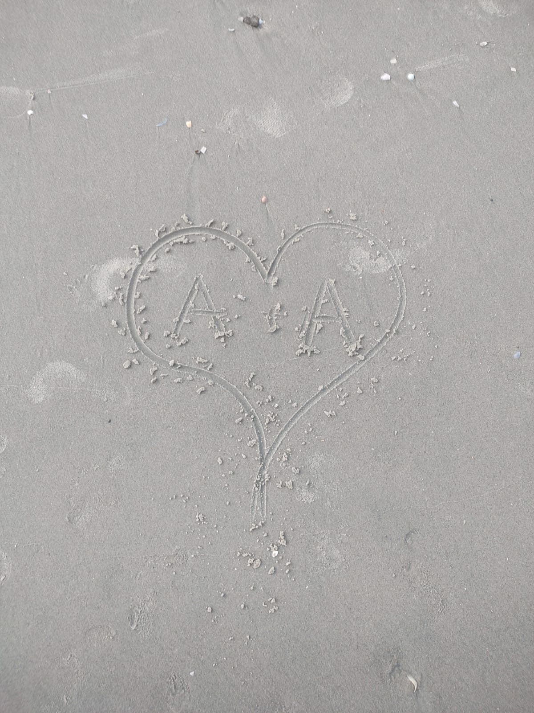
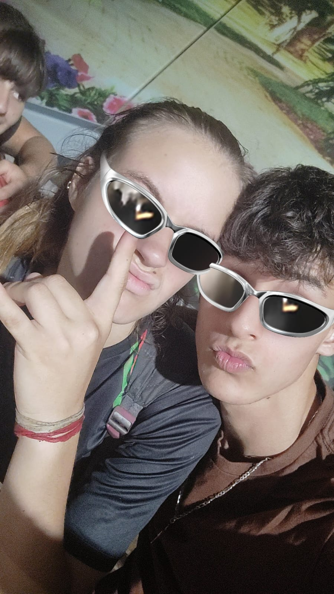
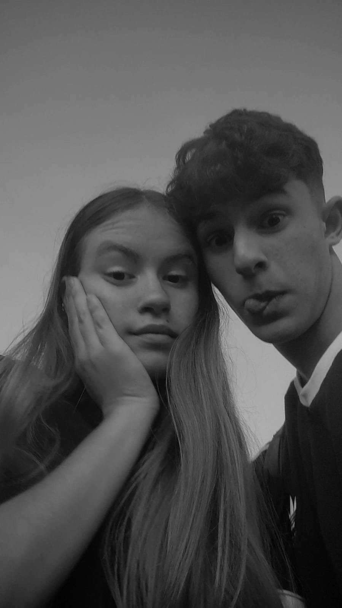

O comeco

Em um golpe de sorte após passar um bom tempo observando, André decide mandar mensagem para a menina incrível que conheceu no ano passado, ao chegar como um amigo não tão intimo optou por conversar sobre amigos em comum que tinham feito, pórem não aguardou muito para demonstrar suas intenções, ao ver que a espetacular menina talvez tivesse interesse mutuo essa história comecou a se construir...
O Primeiro Momento
Ao irem se conhecendo ambos muito felizes conversavam euforicos, ansioso para vê-la novamente e totalmente apaixonado André, vai encontrar sua amada em sua magnifica carroagem da catani... Em seu primeiro encontro o futuro casal se divertiu muito e tiveram suas primeiras lembranças juntos e claro o primeiro beijo em uma roda gigante... Entretanto como a vida não é um mar de rosas, teve de conhecer os futuros sogros, com muito nervosismo pórem tomado pela felicidade e o sentimento bom de estar com sua amada se manteu tranquilo e voltou para casa depois de um dos dias mais felizes de sua vida até ali.
Desenrolar do Romance

Com o passar do tempo e sentimentos se acalmando e edificando o relacionamento houveram mais encontros, alguns dias especiais que passaram juntos, acompanhavam-se durante o dia a dia sempre se apoiando criando intimidade e conexão, aprendendo a lidar um com o outro, André se viu em dos melhores momentos de sua vida, conhecendo oque poderia ser o amor verdadeiro e fazendo de tudo para ver sua princesa feliz e confortável.
Um Amor que Vence a Distância

Hoje, continuam sendo um casal forte que visa pelo futuro feliz e pelo bem um do outro, se compreendendo, lidando todos os dias com a distância de 115km, com quase 6 meses de história seguem felizes e evoluindo como pessoas e também juntos...
Prestigiando a jornada de Agatha Isabelli Wronski Bento e André Vitor Pogorzelski. 30/01/25. 24°57'14.2"S 53°28'42.9"W